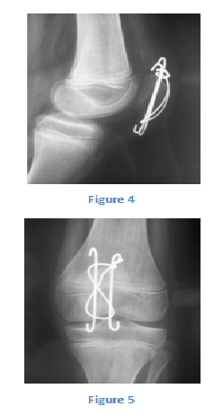
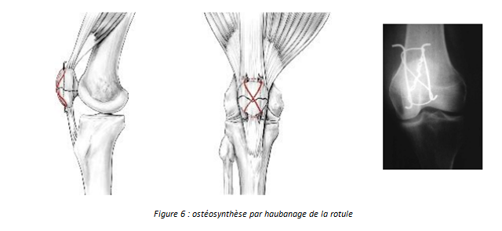
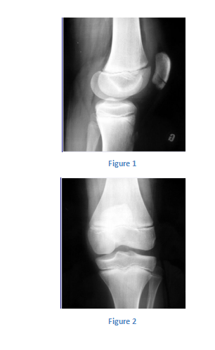
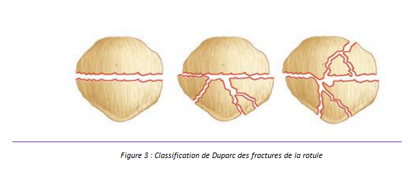

Cas clinique 13
Genou
Enfant de 12 ans, s’était présenté aux urgences pour traumatisme du genou gauche lors d’un accident de sport.
L’examen physique avait retrouvé un genou tuméfié avec une impotence fonctionnelle et une douleur à la palpation de la rotule.
1. Quel est votre diagnostic ? Interprétez la radiographie. Figure 1 R1 C1 AP ++
3.Quelles sont les mesures associées et les suites post opératoires ?R3
4.Quelles sont les séquelles possibles ? R4
Réponse :
Il s’agit d’une fracture transversale de la rotule classée type I de Duparc.
Réponse :
Sous anesthésie générale au bloc opératoire : réduction chirurgicale à ciel ouvert et ostéosynthèse par cerclage haubanage. (Figure 4 et 5)

- -Immobilisation cruro-malléolaire.
- -Contrôle radiographique sous plâtre à j8 et j15.
- -Pas d’activité sportive durant 3 mois.
- -Possible rééducation après immobilisation afin de récupérer les amplitudes articulaires.

Réponse :
- -Patella alta : rotule haute
- -Insuffisance quadricipitale.
- -Lésios ostéo-cartilagineuses fémoro-patellaire et gonarthrose précoce
Commentaire :
La fracture de rotule est une pathologie rare voir exceptionnelle chez l’enfant, le plus souvent secondaire à un traumatisme direct : accident de sport ou de la voie publique.
Commentaire :
Le traitement des fractures sans rupture de l’appareil extenseur consistent en une immobilisation cruro-malléolaire allant de 4 à 6 semaines.
Pour les fractures avec rupture de l’appareil extenseur mais sans déplacement on optera soit pour l’immobilisation cruro-malléolaire soit pour une ostéosynthèse par vis.
Pour les fractures avec rupture de l’appareil extenseur avec déplacement le traitement est chirurgical ; l’ostéosynthèse se fera par embrochage et haubanage ( figure 6)

Commentaire :
Commentaire :
Figure 1

Les fractures de la Patella peuvent être classées en trois catégories :
Classification de Duparc : Figure 3
* Type I : il s’agit d’un trait transversal simple, sans impaction, à déplacement variable, le type i est la conséquence d’une flexion avec impact sur la tubérosité tibiale antérieure et contraction violente du quadriceps.
* Type II : il s’agit d’un trait transversal avec impaction ou comminution du fragment inférieur, la radiographie de profil met en évidence le caractéristique : « signe du pincement » .Le fragment inférieur n’a plus son épaisseur normal, ce type résulte d’un choc sur la rotule au cours d’une flexion, cela permet d’expliquer le tassement. Parfois le tassement n’intéresse que le fragment supérieur : il s’agit du type ii inversé.
* Type III : Le tassement intéresse la totalité de la rotule qui apparaît alors éclatée en étoile, Les lésions cartilagineuses sont plus fréquentes et plus importantes que dans le type.

On peut également les classer selon 2 types :
- -Les fractures qui n’interrompent pas l’appareil extenseur.
- -Les fractures qui entrainent une rupture de l’appareil extenseur.
Références
- M. Hunt and N. Somashekar.
A review of sleeve fractures of the patella in children, Knee, vol. 12, no. 1, pp. 3–7, Jan. 2005.
- R. Gupta, A. M. Johnson, L. Moroz, and L. Wells.
Patellar sleeve fractures in children: a case report and review of the literature.
Am. J. Orthop. (Belle Mead. NJ).
vol. 35, no. 7, pp. 336–8, Jul. 2006.
- J. Beamish, G. L. Roberts, and P. Cnudde.
A case of patellar fractures in monozygotic twin gymnasts. Sports Med. Arthrosc. Rehabil. Ther. Technol., vol. 4, no. 1, p. 20, Jan. 2012.
- Malone, D. Kiernan, and T. O Brien.
Bilateral sleeve fractures of the patella in a 12-year-old boy with hereditary spastic paraparesis and crouch gait.
BMJ Case Rep., vol. 2013, Jan. 2013.
- Y. Lin, W. C. Lin, and J. W. Wang.
Inferior sleeve fracture of the patella.
- Chinese Med. Assoc., vol. 74, pp. 98–101, 2011.
- Y. Dai and W. M. Zhang.
Fractures of the patella in children.
Knee Surg. Sports Traumatol. Arthrosc., vol. 7, no. 4, pp. 243–5, Jan. 1999.
- Yeung and J. Ireland.
An unusual double patella: a case report.
Knee, vol. 11, no. 2, pp. 129–31, Apr. 2004.
- Jacquemier, P. Chrestian, J. M. Guys, C. Mailaender, P. Billet, and J. M. Bouyala.
Fracture-avulsions of the patella in children. Apropos of 3 cases.
Chir. pédiatrique, vol. 24, no. 3, pp. 201–4, Jan. 1983.
- Ditchfield, M. A. Sampson, and G. R. Taylor.
Case reports. Ultrasound diagnosis of sleeve fracture of the patella.
Clin. Radiol., vol. 55, no. 9, pp. 721–2, Sep. 2000.